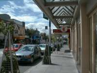 | 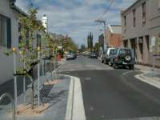 | 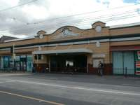 | |
| Church | Toorak Street | a path | South Yarra Train Station |
Tram 8 brings you from Melbourne to South Yarra easily for 15 minute through Toorak Street. The church is a landmark as the beginning of South Yarra. I estimated that a church was located in the entrance of towns, for I saw them there in some towns , but someone said it wasn't truth. On this street there is the South Yarra train station. And you would see many restaurants, of cause, including famous restaurants here. Connecting paths are well provided clean, so we sometimes use a bench settled near the street to break a rest on the way of strolling.
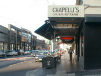 | 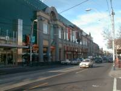 | 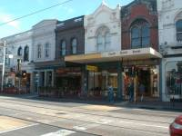 | |
| Chapel Street 01 | Chapel Street 02 | Chapel Street 03 | Chapel Street 04 |
Chapel Street is a shopping street. Both sides are shops being close in a raw. And some part of the sidewalk were occupied with chairs and tables of Coffee shops. A lot of people are used to enjoying drink outside even in winter with using heaters. To tell the truth, it seemed strange for me as a Japanese. Here you could try shopping and various countries' food. Chapel Street must be a lovely street not only for me but also for all.
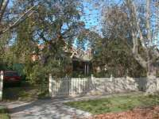 | 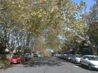 | ||
| a flat | house 01 | house 02 | Road |
Rockley Road is perhaps the end of South Yarra on Toorack St and common as a road for residents. As for Rockley Road a side ranges houses and other has flats mostly. There are a lot of cars parking on every ways, especially resident area. Ways being full of cars are maybe a kind of Australian culture.
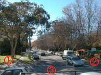 | 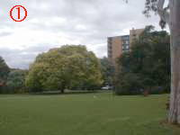 | 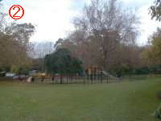 | 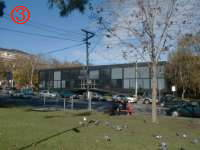 |
| Rockley Rd | park 1 | Park 2 | South Yarra Library |
I think of that residents in Australia have good environment to live and Rockley Rd is not an exception. Arranged many parks, wide roads with roadside trees and definitely divided resident area give people comfort, furthermore it is beautiful for visitors besides. I thought of that Austrian knew what is comfortable for their lives.
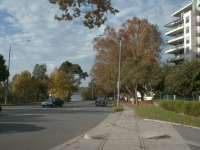 | 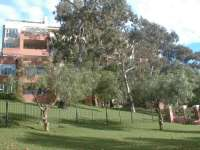 | 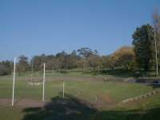 | |
| river side Av | a river side flat | Como Park 01 | Como Park 02 |
Rockley Rd has the end and the small path from the end of the road let us go to Alexandra Avenue which is a riverside road. And it is behind out flat. Como Park on Alexandra Avenue is next to Como House, one of tourist spots of Melbourne. This avenue was named "scenic road" on the road sign, and I thought of it was truth, seeing around.
{kind=link}